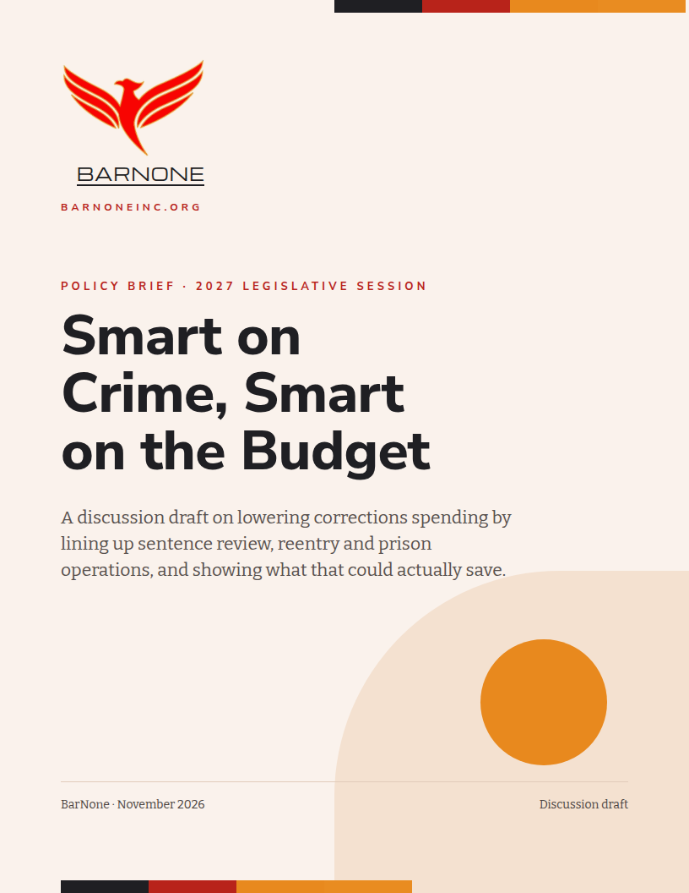

Research Brief No. 4 · Washington
Smart on crime, smart on the budget
Washington faces a shortfall of about $4 billion in the first year of the next budget, and the Department of Corrections spends about $1.7 billion a year. This brief lays out how to spend that money better: supervise more people in lower-cost settings, give people who have served long sentences a real review, and close the prison units that empty out. Our preliminary estimate is about $70 million a year at an accelerated pace.
For who is serving long sentences in Washington, see Brief No. 2, Long and life sentences in Washington, and Brief No. 3, Who would benefit from the Review Act.
Average cost of one prison bed in Washington, FY2026, according to the Department of Corrections.
Preliminary BarNone estimate of net savings per two-year budget at an accelerated pace, after reentry, supervision and Medicaid costs. About $255 million at full scale.
Commutations recommended by the Clemency and Pardons Board that the governor has granted since 2025.
The ask
Put corrections dollars where they do the most good
A graduated reentry slot costs a fraction of a prison bed. A commutation for someone serving life avoids decades of prison cost. Elder parole gives people who are least likely to reoffend a hearing. Together, these move people to lower-cost supervision or resolve a sentence through review.
The savings become real when units empty and close. A bed that stays open saves the state only about $7,424 a year. A closed bed saves about $45,000. That $45,000 is BarNone's estimate, not a Department of Corrections figure. It is below DOC's $86,261 average, which already leaves out headquarters administration, because some of each prison's shared costs, such as perimeter security, health care and support staff, continue until a whole unit or facility closes. That's why scale matters: small moves don't change the budget, and a planned package does.
Age opens the door to review. It doesn't decide the outcome. Each pathway keeps its own rules and safeguards.
The package
Five pieces
An operating plan the Department of Corrections can start now, a bill package for 2027, and executive action on clemency.
1
Grow graduated reentry
Supervise more low-risk people in the community at a fraction of the cost. About 600 people are in it now. At full scale, the plan adds 2,000 more slots.
2
Commute at scale
The governor follows his own board and publishes criteria for older and medically fragile people. Fund and fill the board's five new seats. Gov. Inslee commuted 422 sentences during the 2020 COVID emergency.
3
Pass elder parole (proposed)
Give people 50 and older who have served 20 years a hearing before the review board.
4
Make earned release retroactive
Higher earned release rates should reach people already inside, not just future cases.
5
Close units as they empty
Re-close the Reformatory unit at Monroe reopened in 2026 and close Monroe's solitary unit, moving people with serious mental illness to Sky River's treatment beds.
Everyone gets something
Why it can pass
Budget writers get recurring savings tied to units that actually close. Advocates get commutations, elder parole and more reentry. Corrections staff get transfers, retraining and priority hiring before any unit closes.
The numbers
The scale is the choice
Preliminary BarNone estimates, net of reentry, supervision and Medicaid costs, once running. Counts are people out of prison at any one time, not one-time releases.
| Today's pace | Accelerated | Full scale | |
|---|---|---|---|
| Graduated reentry, added slots | 600 | 1,500 | 2,000 |
| Commutations | 100 | 300 | 400 |
| Elder parole releases | 0 | 200 | 400 |
| Earned release (retroactive) | 200 | 500 | 900 |
| Prison beds freed / closed | 900 / 540 | 2,500 / 2,125 | 3,700 / 3,700 |
| Net general fund, per year | $17M | $71M | $128M |
| Per biennium, once running | $34M | $142M | $255M |
Inputs: $45,000 saved per closed bed; $7,424 per bed that stays open; costs of $13,500 per reentry slot, $11,500 per commutation or parole release, $3,000 per earned release. Figures are rounded separately. Possible savings on the Monroe perimeter wall renovation are not counted.
Making the savings real
Tie population cuts to real closures, and fund the transition
- Tie closures to appropriations. The budget should assume the units close, so the savings show up as lower spending, not just emptier buildings.
- Fund reentry before release. Housing, supervision and Medicaid enrollment come first.
- Let unit-level analysis pick the units. Staffing and fixed costs vary widely from prison to prison.
- Take care of the workers. Transfers, retraining and priority hiring before any unit closes.

The full brief
Read the 12-page brief
The full brief has the charts, the cost tables, the answers to the hardest objections, and every source. It is laid out to print on letter paper, or as a folded booklet on ledger paper.
Read with care
What this brief is, and isn't
- A discussion draft. This is a policy proposal for the 2027 session, not a fiscal note. Elder parole is not current law.
- Preliminary estimates. The savings come from BarNone's model using DOC's published costs. Real savings depend on which units close, when, and what the transition costs. The PDF shows every input.
- Older data on reoffending. DOC's figures on reoffending by age come from people released in 1998 and 2008.
- How we stay nonpartisan. BarNone works with lawmakers of every party in Idaho, Washington, and Oregon. We use public data, publish our methods and sources, share findings with legislators and staff of both parties, and take corrections from anyone. We do not endorse candidates or parties.
Full sources are listed at the end of the PDF. Tell us if you spot something we should fix.
Suggested citation
BarNone. (2026). Smart on Crime, Smart on the Budget (Research Brief No. 4). barnoneinc.org